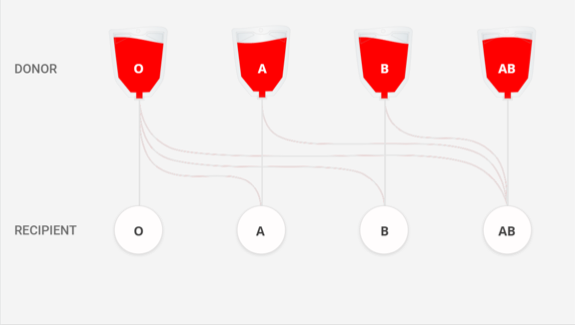

THE FAQ's OF WHAT ARE WE?
1. What is blood donation?
Blood donation is a voluntary procedure that can help save lives. There are several types of blood donation.
Each type helps meet different medical needs.
2. How does blood donation works?
• If you’re donating whole blood, we’ll cleanse an area on your arm and
insert a brand new sterile needle for the blood draw.
(This feels like a quick pinch and is over in seconds.)
• Other types of donations, such as platelets, are made using an
apheresis machine which will be connected to both arms.
(During apheresis, you are hooked up to a machine that collects and
separates different parts of your blood. These blood components include
red cells, plasma and platelets. The machine then returns the remaining
parts of the blood back to you.)
• A whole blood donation takes about 8-10 minutes, during which you’ll
be seated comfortably or lying down.
• When approximately a pint of whole blood has been collected,
the donation is complete and a staff person will place a bandage on your arm.
3. How many types of blood groups are there and which is the most rarest and common blood group?
There are 8 main blood groups: A+ , A- , B+ , B- , AB+ , AB- , O+ , O-
The most rarest among this group is AB-
The most common among this group is O+

4. What are the requirements to donate the blood?
Age- Your age should be between 18 to 65 it defers from country to country.
Donors should be physically fit.
Donors should be safe and healthy.
No alcohol consumed in the last 24 hours.
Do not have blood sugar history.
Blood pressure between 120-80
Do not have to be consumed Tablets like Brufen, Paracetamol, Combiflam for the last 3 days.
Male- Weight- should be at least 50 or 55 and above.
Hemoglobin 12.5gm% and above up to 18gm%
3 months gap between two whole blood donation.
Platelets donation 48 hours between two donations, 2 times in a week, 24 times in a year.
No history of TTI like HIV, HBsAg, HCV, MP, VDRL.
Female- Weight- should be above 50kg.
No monthly cycles.
Do not have pregnancy.
Should not have baby less than one year.
Do not have history of abortion for the last 6 months.
Shouldn’t have baby breastfeeding.
5. How many times can we donate the blood?
Men can donate safely once in every three months while women can donate every four months.
6. Can transgender donate the blood?
Yes, but there are a couple of restrictions.
If you’ve had sex with a male or transgender partner in the last 3 months, you’ll need to
3 months from that contact before you can donate.
Your biology can also affect the patient. For instance, we can’t use platelets from
female donors because of the increased risk of a rare but dangerous reaction called
transfusion-related acute lung injury (TRALI) that’s associated with antibodies in plasma.
The restriction also applies to trans male donors as well as trans female donors,
who are affected by fail-safe mechanisms built in to Lifeblood’s blood management system.
Note that this restriction only affects platelet donation - female and transgender donors
can still give plasma and whole blood donations.
7. Are there different procedures for collecting blood from transgender donors?
We make some adjustments to account for biological differences that may be affected by hormonal treatments. That’s why we’ve developed specific protocols for assessing haemoglobin, iron levels and blood volume. That means that if you’re on hormone replacement therapy, you can still donate.
8. After blood donation what measures are we suppose to take?
• After donating blood, you’ll have a snack and something to drink in the refreshment area.
• You’ll leave after 10-15 minutes and continue your normal routine.
• Enjoy the feeling of accomplishment knowing you are helping to save lives.
• Take a selfie, or simply share your good deed with friends. It may inspire them to become blood donors.
Group AB can donate to other AB's but can receive from all others.
Group B can donate red blood cells to B's and AB's.
Group A can donate red blood cells to A's and AB's.
Group O can donate red blood cells to anybody.
What Is A Universal Blood Donor?
Universal donors are those with an O negative blood type. Why? O negative blood can be used in transfusions for any blood type.
Type O is routinely in short supply and in high demand by hospitals – both because it is the most common blood type and because type O negative blood is the universal blood type needed for emergency transfusions and for immune deficient infants.
Approximately 45 percent of Caucasians are type O (positive or negative), but 51 percent of African-Americans and 57 percent of Hispanics are type O. Minority and diverse populations, therefore, play a critical role in meeting the constant need for blood.
Types O negative and O positive are in high demand. Only 7% of the population are O negative. However, the need for O negative blood is the highest because it is used most often during emergencies. The need for O+ is high because it is the most frequently occurring blood type (37% of the population).
The universal red cell donor has Type O negative blood. The universal plasma donor has Type AB blood. For more about plasma donation, visit the plasma donation facts.